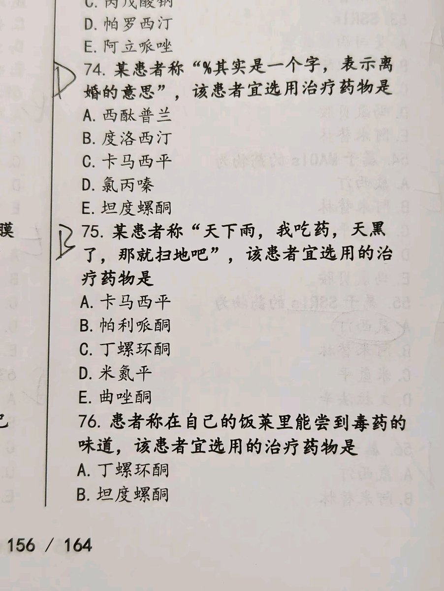

Jahseh
@godspeedyou50
我家厨房碗柜里有一碟瓷盘子其实是外星人的飞碟专用于日本人用来攻打外星球抢夺娃娃菜用于我制作酸菜炖药片子然后进化成丹阳子吐出舍利子然后飞升到西方东土大唐传播性文化的知识以及现代土木建筑工程的专利科学和基因编辑技术不说了我妈把电饭锅里的臭鞋垫子端出来了我先肌肉注射了

𝗩𝗮𝗹𝗲𝗻𝗰𝗲🆁🅲 瓦楞斯
@ValenceLab
等等…等等…我闻到了什么？饭！是饭的味道！不对！是毒药！剧毒无比！每一粒白米饭都在对我狞笑！每一片菜叶都在密谋刺杀我！我的舌头在融化！我的食道在燃烧！有人要害朕！是谁？！是谁在我的碗里下毒！！丁螺环酮在哪里！坦度螺酮在哪里！快给我端上来！你不给我药我就把桌子啃了！我就把地球嚼了！ https://t.co/9SNvhLYALS